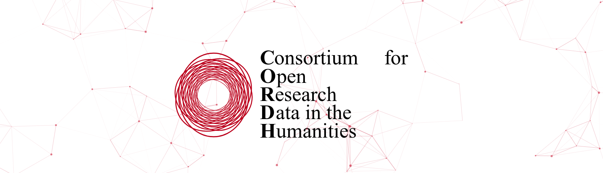

Research Infrastructure
The Bibliotheca Hertziana is a lead partner in CORDH , the Consortium for Open Research Data in the Humanities.
Together with other research institutions in the history of art and science (Villa I Tatti, Swiss Art Research Infrastructure, Max Planck Institute for the History of Science), we jointly develop digital infrastructure for humanities research.
Our focus is on the open publication of research and reference data, and the close integration of digital methods in the humanities (image annotation, semantically-linked texts, geospatial analysis), reference and research databases, and digital publishing.
Read more at the CORDH website